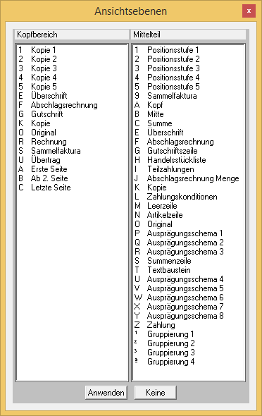

Die zur Verfügung stehenden Flags sind vom PDI des bearbeiteten Formulars abhängig. Im Formular "P02W44" stehen z.B. folgende Flags zur Verfügung:

Im Kopfteil
|
A |
Nur 1. Seite |
|
B |
Ab 2. Seite |
|
C |
Nur letzte Seite |
|
E |
Überschrift |
|
F |
Abschlagsrechnung |
|
G |
Gutschrift |
|
K |
Kopie |
|
O |
Original |
|
R |
Rechnung |
|
S |
Sammelfaktura |
|
U |
Übertrag |
|
1 |
Kopie 1 |
|
2 |
Kopie 2 |
|
3 |
Kopie 3 |
|
4 |
Kopie 4 |
|
5 |
Kopie 5 |
Im Mittelteil
|
1 |
Positionsstufe 1 |
|
2 |
Positionsstufe 2 |
|
3 |
Positionsstufe 3 |
|
4 |
Positionsstufe 4 |
|
5 |
Positionsstufe 5 |
|
9 |
Sammelfaktura |
|
A |
Kopf |
|
B |
Mitte |
|
C |
Summe |
|
E |
Überschrift |
|
F |
Abschlagsrechnung |
|
G |
Gutschriftszeile |
|
H |
Handelsstückliste |
|
I |
Teilzahlung |
|
J |
Abschlagsrechnung Menge |
|
K |
Kopie |
|
L |
Zahlungskonditionen |
|
M |
Leerzeile |
|
N |
Artikelzeile |
|
O |
Original |
|
P |
Ausprägungsschema 1 |
|
Q |
Ausprägungsschema 2 |
|
R |
Ausprägungsschema 3 |
|
S |
Summenzeile |
|
T |
Textbaustein |
|
U |
Ausprägungsschema 4 |
|
V |
Ausprägungsschema 5 |
|
W |
Ausprägungsschema 6 |
|
X |
Ausprägungsschema 7 |
|
Y |
Ausprägungsschema 8 |
|
Z |
Zahlung |
Der Andruck der Variablen wird durch die Flags gesteuert. Die Zuordnung der Flags zu den Variablen geschieht im Eingabefeld "Flags".
Hinweis
An einer Stelle eines Formulars können mehrere Variablen angeordnet werden (z.B. auf der ersten Seite Kopfinformationen, auf der Folgeseite Mittelteilsinformationen. Um trotzdem eine komfortable Bearbeitung der einzelnen Elemente zu gewährleisten, kann durch Anwahl von Flags im Bereich "Ansichtsebenen" gesteuert werden, welche Flags im Formular angezeigt werden sollen.
Beispiel
Es wird in dem Bereich "Ansichtsebenen" im Kopfteil das Flag "A - Nur 1. Seite" ausgewählt. Durch Anwahl des Buttons "Anwenden" werden nur jene Elemente angezeigt, die mit dem Flag "A" versehen sind und somit auf der ersten Seite gedruckt werden.
Ø Flags
In diesem Beispiel hat die markierte Variable die beiden Flags
ü A - für "Nur 1. Seite" und
ü O - für "Original"
Das bedeutet, dass die Variable nur auf der 1. Seite des Originalbeleges angedruckt wird. Auf weiteren Kopien wird der Andruck dieser Variable unterdrückt.
Beispiel 1
Soll bei großen Belegen eine Variable für den Übertrag in das Formular eingebunden werden, dann wird die Variable eingebunden, markiert und mit dem folgenden Flag versehen:
ü U - für "Übertrag"
Beispiel 2
Um eine Variable anzudrucken, welche nur auf der letzten Seite angedruckt werden soll, wird das folgende Flag vergeben:
ü C - für "Nur letzte Seite"
Sollte der Beleg nur eine Seite haben, wird die Variable trotzdem angedruckt. Bei mehreren Seiten geschieht der Andruck auf der letzten Seite.